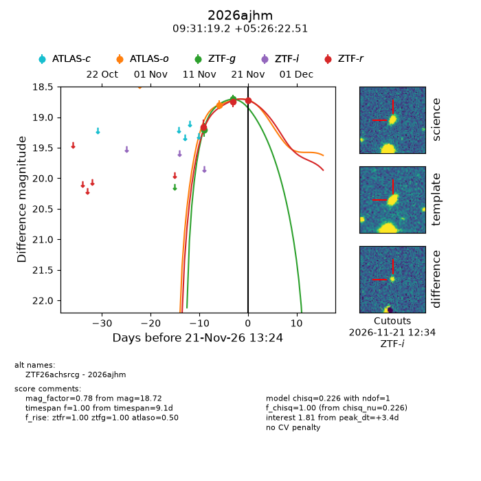
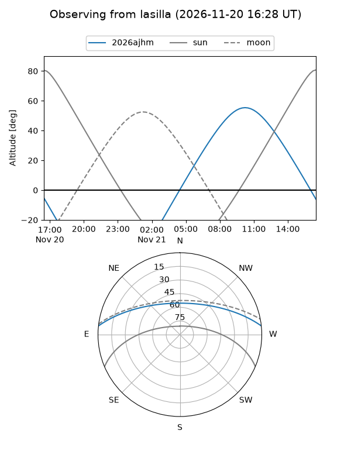
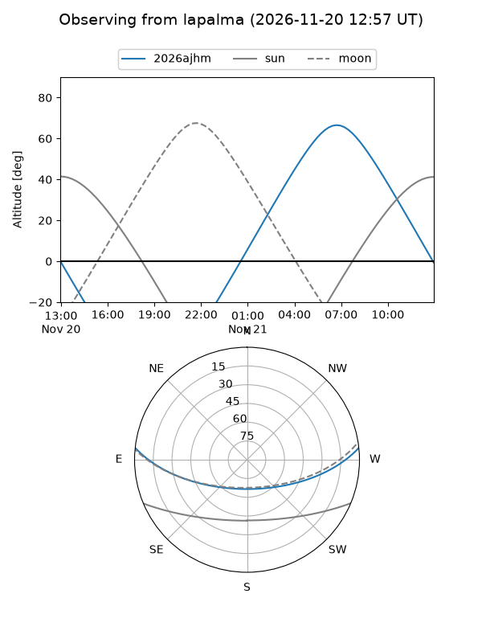
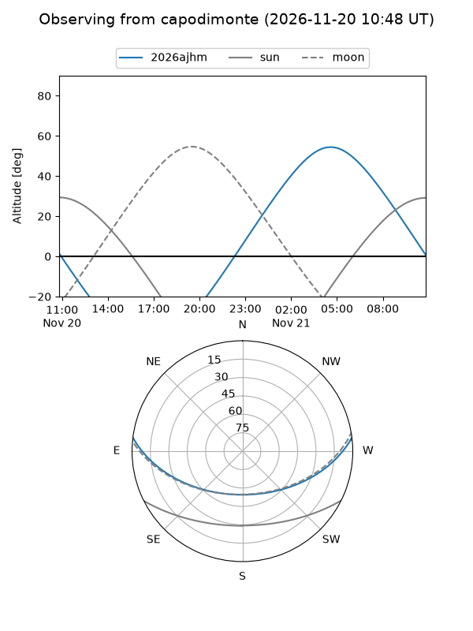
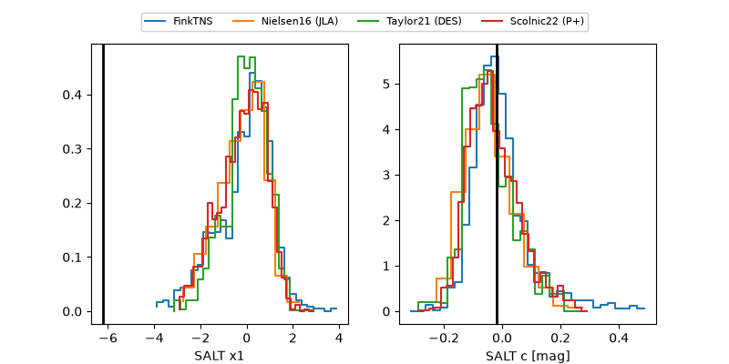

2026ajhm
Target 2026ajhm at 2026-11-21 13:25
Aliases and brokers:
FINK-ZTF: ztf.fink-portal.org/ZTF26achsrcg
Lasair-ZTF: lasair-ztf.lsst.ac.uk/objects/ZTF26achsrcg
ALeRCE-ZTF: alerce.online/object/ZTF26achsrcg
YSE-PZ: ziggy.ucolick.org/yse/transient_detail/2026ajhm
TNS name: wis-tns.org/object/2026ajhm
Direct TNS query: direct search
alt names
ZTF26achsrcg (ztf,fink_ztf)
2026ajhm (tns,yse)
Coordinates:
equatorial (ra, dec) = 142.8300,+5.43959
equatorial (HMS+DMS) = 09:31:19.20,+05:26:22.51
galactic (l, b) = (228.1286,+37.76131)
Flags:
peak dt: +3.4
Photometry:
last atlaso=18.80, ztfg=18.70, ztfr=18.72
1 atlaso, 2 ztfg, 3 ztfr detections
Lightcurve

Visibility



Additional plots
